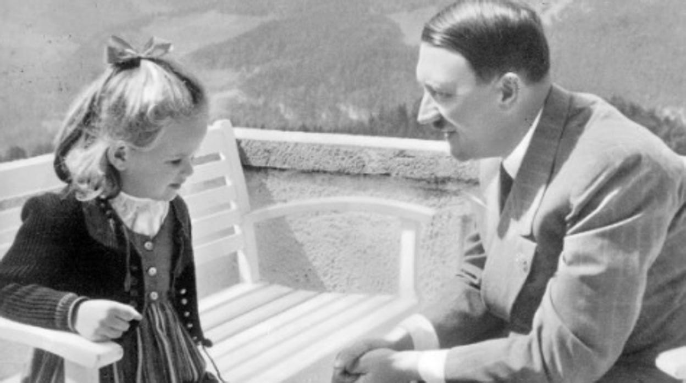
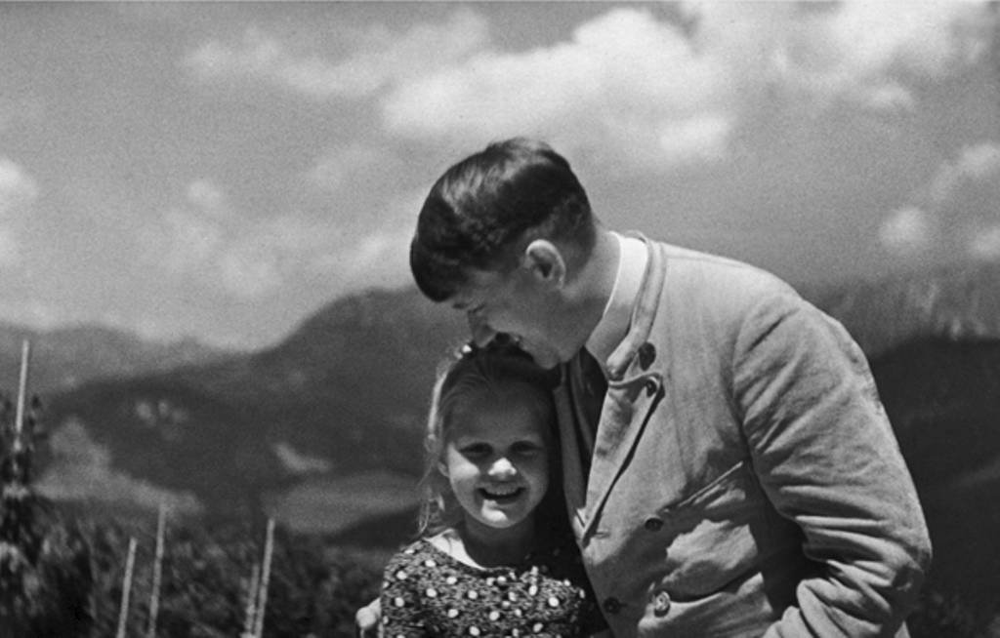

Archivo-ns
Menu Principal:
JUDÍOS
NACIONALSOCIALISTAS: LOS SOLDADOS OLVIDADOS DE
HITLER

Hans
Sander
150.000
Judíos Lucharon
por Hitler: De ellos, hubo cerca de 30.000 que recibieron
condecoraciones en la
guerra y otros 19.000 fueron ascendidos de cargos, y Hitler llegó a
expedir
certificados de sangre alemana limpia llamado
Deutschblütigkeitserklärung que
no sólo les permitía combatir sino también ser considerados Arios y
poder
llegar a ser oficiales de los Ejércitos Nacionalsocialistas. Algunos
incluso
100% Judíos formaron filas junto a Adolf Hitler en el NSDAP e incluso
formaron
parte de las temidas Unidades de Asalto Nacionalsocialistas, las SA.
Ese
es el caso de Hans
Sander que era Sturmführer de las SA así como miembro del Partido
Nacionalsocialista (NSDAP), también fue receptor de la Medalla de Oro
del
Partido que se entregaba solo a aquellos que eran los más Fervientes
Nacionalsocialistas. Sander era un miembro completamente entusiasta y
llegó a
recibir del propio Hitler un Deutschblütigkeitserklärung. El
certificado
expedido el 30 de julio de 1935 con la firma de Hitler, además señalaba
especialmente: “Apruebo su petición, en lo que a usted respecta
personalmente,
en consideración a su larga pertenencia al partido y su servicio digno
de
mención a nuestro movimiento. No existe razón por la que no debería
usted
permanecer en el partido o en las SA y retener su puesto de mando”.
Hubo
muchos otros casos,
pero aquí dejaremos una lista de los más destacados:
El
30 de octubre de 1941,
Hitler firmó un certificado a favor del teniente Ernst Prager,
medio-judío, a
fin de que pudiera incorporarse al servicio activo con un “status igual
al de
las personas de sangre alemana con respecto a las leyes raciales
alemanas con
todos sus derechos y obligaciones consiguientes”. Estos judíos llegaron
a
alcanzar incluso puestos de mando de relevancia. Por ejemplo, Ernst
Bloch y
Felix Bürkner fueron coroneles; Helmut Wilberg, general de la
Luftwaffe; Paul
Ascher, primer oficial de Estado mayor del almirante Lütjen en el
famoso
acorazado Bismarck; y los hermanos Johannes y Karl Zukertort, generales.
Por supuesto, el número de oficiales y suboficiales fue mucho mayor e incluyó al futuro canciller alemán Helmut Schmidt, que era un cuarto de judío y que llegó al grado de teniente de primera clase. La situación reviste un carácter aún más llamativo si se tiene en cuenta que en virtud de una orden de 8 de abril de 1940 se eximió de servir en el Ejército a todos los medio-judíos y que muchos de ellos se entregaron a un largo proceso para conseguir su readmisión en las unidades de combate. No sólo lo consiguieron, sino que obtuvieron numerosas condecoraciones militares por su valentía en el campo de batalla, como el teniente judío Paul-Ludwig Hirschfeld condecorado con la medalla por heridas de guerra y la cruz de servicio militar con espadas, al capitán judío Edgar Jacoby, que recibió tres condecoraciones incluida la medalla por heridas de guerra; al medio judío Ernst Bloch, con cinco medallas incluida la cruz de hierro de primera clase; al Fedlwebel medio judío Wilhelm von Helmolt, con cuatro condecoraciones incluida la de heridas de guerra; al general medio judío Werner Maltzahn, con cuatro medallas incluida la cruz de servicios de guerra de segunda clase.
No
pocos de ellos
recibieron por añadidura certificados de sangre alemana limpia firmados
por el
propio Hitler. Por ejemplo, el mismísimo medio judío Werner Goldberg,
que era
Gefreiter, fue presentado en una fotografía de propaganda del Tercer
Reich como
“El soldado alemán ideal” y posteriormente su cara fue usada en
carteles de
reclutamiento de los Ejércitos Nacionalsocialistas. Tampoco faltaron
los casos
de judíos a los que se otorgó la plena ciudadanía Aria por su cercanía
con
algún soldado alemán. Seguramente, el caso más conocido, aunque no el
único,
fue el del general y defensor de Berlín Gotthard Heinrici, que estaba
casado
con una medio judía. Legalmente, debería haberse divorciado pero logró
para su
esposa e hijos un certificado de sangre alemana limpia firmado por
Hitler. Cabe
mencionar que cuando Hitler invadió la URSS, en muchas aldeas y
ciudades las
poblaciones judías salieron a recibir a los alemanes como libertadores.
Me
gustaría terminar este
articulo con una porción de la historia, que permite ver sin lugar a
dudas, que
a estos 150.000 judíos no se les acepto en la comunidad alemana solo
para ser
usados como carne de cañón.
Hitler
adoraba a los
niños y le gustaba tomarse fotos con ellos. Siempre que estaba de buen
humor,
hacia salir a los niños de la multitud que le aclamaba y les obsequiaba
con
pasteles. Su fotógrafo publicó un libro llamado “Hitler entre los
niños”. De
entre todos esos muchos niños, una niña llamó la atención del Führer
dentro de
la multitud al enterarse que cumplía años la misma fecha que él, es
decir, el
20 de Abril.
La niña se llamaba Berneli Nienau y Hitler pidió permiso a su madre para que la volviese a llevarla a Berghof (residencia gubernamental de Adolf Hitler en Obersalzberg) alguna vez. La pequeña se convirtió en la preferida de Hitler, tanto que la llamo “su pequeño amor”. Hoffmann les fotografió a menudo. Las fotografías son ciertamente encantadoras. En ellas se ve a un Hitler entusiasmado con la pequeña, en los jardines y la pequeña también parece disfrutar en compañía del poderoso líder.

Adolf Hitler con Bernile Nienau
¿Fin de la historia?,
claro que no…
Hitler, en 1934 se enteró
de que los abuelos paternos de la niña eran judios, los registros indican que a
pesar de que Hitler era consciente de su ascendencia, continúo permitiendo a la
niña y a su madre visitarlo hasta finales de 1938. Al Führer le apenó mucho no
poder disfrutar de sus inocentes placeres. Finalmente Berneli y su madre
visitaron a Hitler desde 1932 a 1938.
En las fotografías de
abajo, Hitler junto a la pequeña Berneli. Estas fotografías fueron tomadas por
el fotógrafo personal de Hitler, Heinrich Hoffmann.




Fuente:
fpp.co.uk